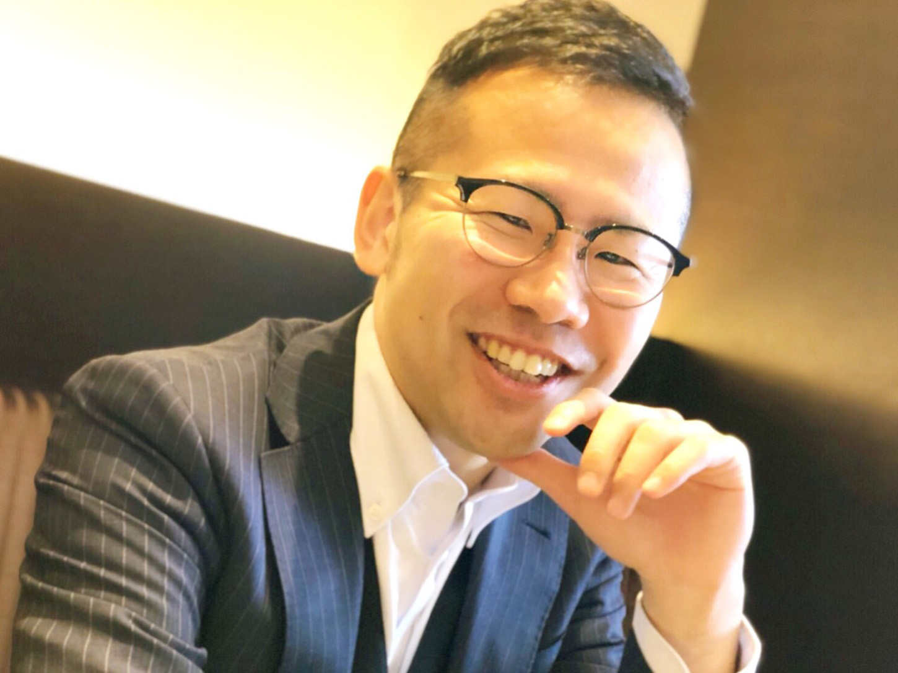
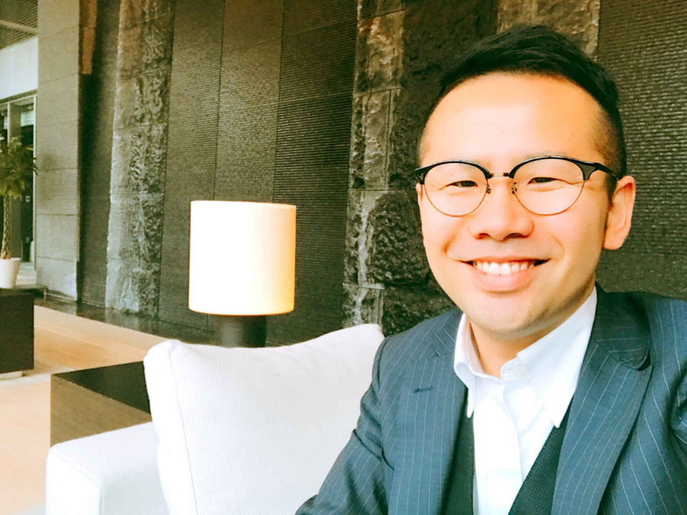
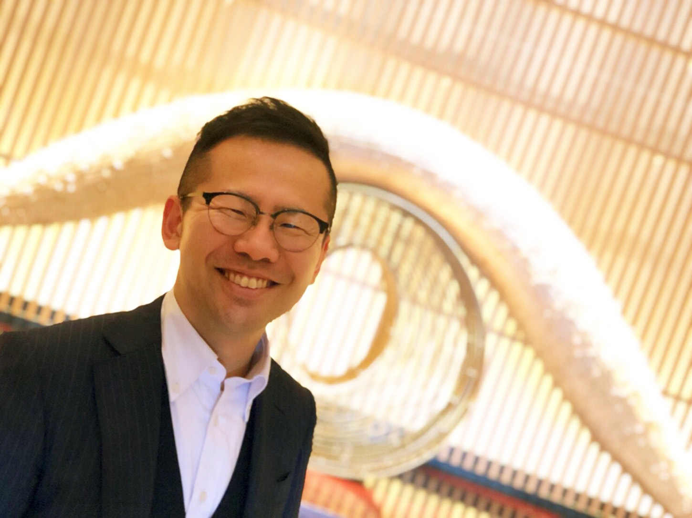
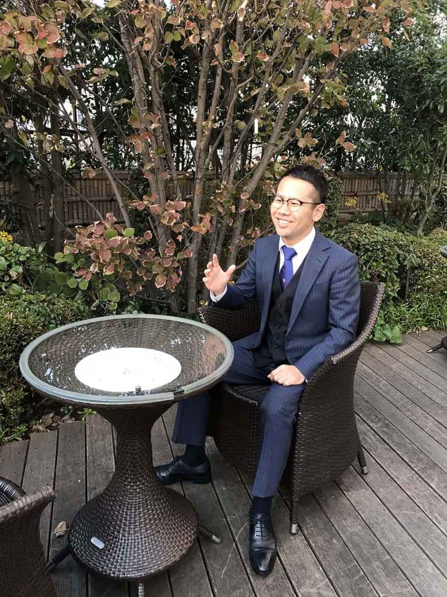

| トップ１％が大切にしている究極の株投資法 〜未来を生き抜く一生モノの技術〜 | |
| 北川紘平 | |
| Hitotsuku Publication (2018) | |
北川紘平
あなたは、運命の出会いに巡り合ったことはありますか？
運命の出会いと聞くと恋愛というイメージがあるかもしれません。ただ、ここで私がお聞きしたいのは、人生をガラッと変える出会いです。
私の場合は、株との出会いでした。株を知るまでは、自分の時間を切り売りして、ひたすら働き続けていました。新卒で入社したオール電化のサービスを販売する不動産会社、その後転職した外資系企業、がむしゃらに働いたり、上司から嫌みを言われたり、自分の将来のキャリアに絶望したり。今、振り返るといろんなことがあったと思いますし、それはそれで良い経験でした。
しかし、もし株に出会わず、あのまま働いているとしたら......正直考えただけでもゾッとします。あの状況で定年まで働き続けるというのは、考えたくありません。それくらい株がもたらしてくれたものが、自分にとって大きかったと言えるでしょう。
株がうまくいくようになって得たものが３つあります。
１つ目は「お金」です。投資と聞くと、多くの人は稼ぐことをイメージするのではないでしょうか。会社員で働いているより多くの収入を得られるようになると、いろんな意味で世界が変わってきます。会社に頼らず稼げるという自信を持つメリットは大きいです。
２つ目は「時間」です。詳細は後ほどご紹介しますが、株から得られる収入は「自力で稼いだ収入」になります。会社員のときのように、時間を切り売りして稼ぐという状態とは大きく異なります。これにより、時間をより自由に使えるようになって、人生がより豊かなものになりました。
そして、３つ目は「仲間」です。株は１人で黙々と、それこそデイトレーダーのイメージが強いかもしれません。しかし、私は株コミュニティを結成して、１人ではなく、そこに所属するメンバー全員で良くなろうと活動しています。１人でやっていると折れそうになっても、仲間がいることで乗り越えられるということはあります。また、自分だけ稼いで時間ができたとしても、１人では孤独に苛まれてしまうことでしょう。だったら自分だけでなく、お金と時間が自由な仲間を作ることで、みんなで楽しい時間を共有しようと考えたのです。
今では、多くの仲間と会いたいときに会って、行きたい場所に行けるようになりました。人生が充実しているとは、このことを言うのかなと思います。
そんな私も、今でこそ株コミュニティを運営するような立場になりましたが、かつては普通のサラリーマンであり、生い立ちも決して特別なものではありませんでした。この本では、そんな私の生い立ちを振り返りながら、一歩チャレンジできない人の後押しができればと思います。

私は、滋賀県草津市に生まれました。私の家族は女系家族で、子どもは自分以外、全員女性です。その影響もあってか、私は唯一の男の子として可愛がられるようになりました。そして、このような環境に育った影響もあり、どのようにすれば周囲から好かれるかということを体感することができました。これは、今後の私の人生において大きな影響を与えることになります。周囲の人に恵まれた人生を送ることを可能にしたのは、このような環境があったからだと思います。
人間は１人で生きていくことはできません。だからこそ、周囲の人たちから力を借りる必要がありますが、そのためには周りから「好かれている」ことがとても大切です。これは、私の35
年間の人生で体感し、学んできた大きな教訓です。媚びを売るわけではなく、どうしたら周囲の人たちから「力を貸してあげたい！」と思ってもらえるかが、人生の成功を大きく左右するのではないでしょうか。
小学生に進級してから、私は野球を始めました。その後途中で辞めそうになっても、野球は高校まで続けることになります。その野球を通じて学んだことも後ほどお伝えいたします。
中学校に進学してから、私は上級生やクラスメートに恵まれてきました。そのことを実感する大きな出来事が、生徒会長への立候補です。私は、中学校２年生の後期に生徒会長を務めることになりました。ただ、生徒会長になるにも選挙で当選する必要があります。当時の生徒会長選挙は、いわゆる真面目な女の子との一騎打ちでした。その女の子は、毎日朝校門に立って一生懸命選挙活動をしていました。「投票をお願いします」と登校する生徒に向かって頭を下げていました。
一方、私は真面目とは言い難い生徒でした。上級生でちょっと悪いことをしている先輩とも仲良くしていました。正直、毎朝校門に立って選挙活動するのはやだなぁと思い、選挙活動は校門に「投票をお願いします」という張り紙を１枚貼って、済ませてしまうことに。結局、投票日の演説まで私はまともな選挙活動をほとんどしませんでした。
そして、迎えた会長選の当日。当選することにあまり執着がなかった私にとって、驚くような出来事がありました。私の演説が終わってから、普段仲良くしていた同級生やちょい悪の上級生から拍手喝采を受けたのです。「会長は北川で決定だろう」という声まで上がって、その場の雰囲気は私にとって追い風になりました。そのおかげもあり、なんと生徒会長に当選してしまったのです。この経験から、改めて周囲の人たちから可愛がられることの重要性を体験することができました。
当選したからには、期待に応えるべく、責任感を持って生徒会長を務めました。また、生徒会長として卒業式で送辞を述べるなど、大勢の前で話す機会がたくさんありました。しかも、当時いた中学校はマンモス校でした、そのおかげもあり、人前で喋ることに対して抵抗を感じなくなりました。
生徒会長への立候補は、私にとってちょっとしたチャレンジでもありました。しかし、そのチャレンジしたことで、このような貴重な経験をすることができました。チャレンジすることの大切さは、その後の人生にも活きることになります。
高校に入ってから、私はアルバイト三昧で青春を謳歌しようと考えていました。しかし、どうもすっきりしません。なぜだろうと考えたとき、私の頭の中にあったのは野球のことでした。小学校・中学校と野球を続けてきて、特に中学校の時は生徒会長と両立しながら野球部の活動も一生懸命やってきました。
それだけ打ち込んできたものが急になくなると、どこか寂しくなるものです。結局、私は高校の野球部に途中から入部することになりました。そんな私を、当時の部員はあまり快く思っていませんでした。それはそうです、自分たちは入学してから野球を一生懸命やるんだと決めて、４月から活動をしているのです。私のような中途半端な人間を受け入れたくないという気持ちがあってもおかしくありません。ただ、私も途中から入ったとはいえ、練習に関しては人一倍練習に打ち込みました。そうすることで、周りの先輩や同級生も徐々に私を認めてくれるようになりました。
私がいた高校は、進学校でありながらスポーツも盛んでした。サッカー部は当時全国２位になったこともあり、陸上部や水泳部は全国大会の常連でもありました。そんな中、野球部は決して強いとは言えない存在でした。県大会ベスト16
がせいぜいです。私も、２年生の時はレギュラーになれたものの、最後の学年はベンチ外になるという挫折も経験しました。しかし、大勢の仲間とともに、試合で勝利を目指すという経験は何ものにも変え難いものです。そして、何より一生付き合える仲間ができたことも非常に大きかったです。この仲間の存在は、私が人生で苦しくなったときに大きな支えとなってくれました。今でも、休みが合えば飲みに行くこともあります。仲間の大切さを学ぶとても良い機会になりました。
大学進学してから、私は学校にほとんどいかずアルバイトと麻雀に明け暮れる日々でした。また、中型バイクの免許を取った時は、友人と共に北海道へツーリングに行くなどひたすら遊びまくりました。
その影響もあり、４回生になった時は卒業が危なくなる位、単位が足りていない状況でした。しかし、その時に支えてくれたのも友人や仲間の存在でした。進級できていたのも、友人が私の代わりに出席をつけてくれていたこともあり、本当に感謝してもしきれません。また、３回生から所属したゼミでは運命の出会いがありました。そこで出会った女性とお付き合いすることになり、やがて結婚することになります。当時彼女だった嫁さんにも、卒業のために色々と助けてもらいました。こうして、周囲の助けもあり私は何とか卒業するめどをつけることができたのです。
卒業のめどがついたことで、私は就職活動を本格化させます。正直、業界や職種にはあまりこだわりがありませんでした。そんな時、何気なく受けた説明会である社長の姿を見て衝撃を受けました。一見するとサーファーのようにイケイケな感じで、髪の毛も少し茶色がかっていました。さらに、説明会の会場には真っ赤なポルシェで乗りつけるなど、その破天荒な行動にも良い意味で影響を受けました。「この社長の下で働きたい！」。そう思った私は、早速その会社を受けることにしました。そして、最終面接でその社長と再会することになるのです。
嬉しいことに、社長は私のことを覚えていてくれました。私は、説明会の当日社長に対して何度も質問をしました。そのおかげもあり、私の名前と顔を完全に覚えてくれていたのです。ここまでくると、完全にこの社長に惚れてしまいました。結局、私はその会社から内定をいただき、新卒として入社することになったのです。そして、この経験を通じて、職種など、どんなことをやるのかより、誰と働くかの方が重要だということに気づきました。
ちなみに、当時新卒で入社した同期は28
名いましたが、ほぼ全員が入社の理由として「社長の存在」を挙げていました。それくらい衝撃な社長だったのです。

衝撃の会社説明会を受けてから内定を無事いただき、そして奇跡の大学卒業を実現して憧れの社長の下で働くことになりました。
あの社長のようになりたいという強い思いもあり、入社当初から猛烈に働きました。営業成績も良く、同期の中でも抜きん出た存在になりつつありました。そんなある日、会社から、新卒メンバーだけで支店を立ち上げるようミッションが出ました。今考えると、かなり異例のことだなと思いますが、このようなことを発信して実行するのが社長の凄いところです。
実際に、新卒メンバーだけで支店を立ち上げることになるのですが、なんと！ 支店のリーダーに私が抜擢されたのです。営業成績が良かったこともあり、このチャンスを逃すまいとより一層仕事に打ち込みました。新卒メンバー同士ということもあり仲が非常に良く、チームワークも抜群でした。そして、わずか２ヶ月で全国一の営業成績を上げる支店となったのです。この支店というチームで１つの目標を追い、結果を目指していくというプロセスは、高校の野球部時代の経験が存分に活かされたと思います。そして、１つの結論が私の中で生まれました。それは、雰囲気が良いと成果につながりやすいということです。新卒メンバーだけで構成されたチームですので、能力やスキルはあまりなかったでしょう。しかし、みんなで１つのことを追っていくという団結力が、それを補って余りあるくらい発揮されたのです。こうして、新卒１年目の私は、社会人として最高のスタートを切ることに成功したのです。
新卒２年目になってから、またまた大きなミッションを任されることになります。名古屋に支店を作る、そこのリーダーになってくれないかという話をいただいたのです。新卒２年目で、支店長になれるというのはなかなかありえない話です。普通だったら尻込みしてもおかしくありません。しかし、当時イケイケだったことと、チャレンジすることが大事だということを身も持って経験していたので、迷わず「はい！」と答えました。こうして、私の新卒２年目は名古屋でスタートを切ることになったのです。新卒メンバーだけで支店を立ち上げた経験があるとはいえ、まだまだマネジメントスキルも不十分です。周りは、自分の先輩にあたる方も多くいらっしゃいます。ただ、それに恐れることなくやってやろうという強い気持ちがあったことを覚えています。
名古屋の支店長になってからも、私は必死になって働きました。休日返上で働き、当時は月に２日ほどしか休んでいなかったと思います。それでも、仕事にやりがいを感じて、頑張っていました。
名古屋の支店長になって、１つ変わったことがありました。それは、直属の上司が役員ではなく、社長に変わったことです。あの憧れの社長と直接やり取りができると思っていましたが、これが私のキャリアに大きな影響を与えることになりました。
毎週日曜日、社長は週に１本も契約が取れていないと夜の９時ごろに私の携帯に連絡をします。
「週に１本も取れていない！？ どうするんだ！！」
この一言に、私はとっさに「飛び込みに行きます！」と答えます。そうやってとっさに答えてしまうくらい、怖かったのを覚えています。
社長からは、「今から飛び込みに行っても無駄だ。これまで商談してきたお客様に電話して、注文をいただけそうか聞いてみなさい」と言って電話を切ります。
その後、私はお客様に電話を......かけることなく時間が過ぎ去るのを待っていました。こんな時間に電話をかけても、お客様からクレームを生むだけだと思い、とにかく時間が過ぎるのを待っていました。いずれにしても社長には報告を入れないといけません。それが嫌で嫌でたまりませんでした。
しかし、何も連絡しないともっと恐ろしいことになります。深夜になってから、電話をかけようとしたらちょうど社長から着信がありました。「終われ」。この一言で、恐怖の時間はようやく終わりを告げます。
私の感覚からは信じられませんが、社長からすると、週に１本も契約が取れていなかったらどんなことをしてでも注文を取ろうと、深夜まで営業するのが当たり前だというのが常識になっているのです。しかし、私にはこの基準がとても厳しかったです。正直、お客様の為にもなるのかなぁと疑問に感じたこともあります。さらに、休みが少ないだけでなく、給料がものすごく低かったのも覚えています。支店長とはいえ、新卒２年目で月に20
万円ほどしかありませんでした。時給に換算したら、とんでもなく低い額になっていたでしょう。当時の私は社会人になりたて、しかも初めての会社ということもあり、これが当たり前だと思っていました。しかし、いろいろな経験をすることで、もう耐えられないと考えるようになったのです。
そこで、私は転職支援会社に相談に行きました。色々と求人をあたっていただき、その中で建設現場向けの工具を販売している外資系営業会社を勧められました。ここなら、もっと給料も良く、まともな働き方ができるかもしれない。そう思って、選考を受け内定をいただくことができました。結局、私は憧れて入った新卒の会社を３年でやめ、新たなキャリアを歩むことになったのです。
いろいろとありながらも、１社目で支店長まで経験した私は、意気揚々で新たな会社に入社しました。正直、自分はできるという自信がありますし、今考えると自惚れもあったなと思います。
１社目で厳しいことがあっても、気合と根性と訪問件数などの量でカバーしてきた私は、同じようにやれば２社目でも結果を出すことができると考えていました。しかし、現実はそんなに甘くありません。２年目までは営業成績も鳴かず飛ばずで、真ん中より下の位置に甘んじてしまいます。
正直、当時は鼻をポキっと折られたような大きな挫折感を味わいました。一体どうすればいいんだろう、このままでは何も結果を残せずに終わってしまう。そこで、私はどうすれば営業成績が上がるか、自分で考えて創意工夫するようになりました。正直、最初はトライ＆
エラーの繰り返しです。うまくいかないことがほとんどで辛い時期も過ごしました。しかし、徐々に行動が成果に結びつくようになります。自分で考えてできる楽しさを知った私は３年目以降、営業成績が徐々に上向いていきます。今考えてみると、転職したばかりの私は、営業として予算の見込み管理や担当しているお客様の情報を、きちんと把握できていなかったなと思います。しかし、情報整理して管理できるようになったことで、どのようなアクションを取ればいいか、その感覚を徐々につかめるようになりました。営業マンとして１つ壁を乗り越えることができたのです。
こうして、私は64
ヶ月連続で予算を達成するなど、５年目以降は営業成績でもトップ５に入るくらいの実績を残せるようになりました。この会社は、日本国内だけでも従業員が５００名ほどいます。その中のトップ５に入っている。かつて味わった挫折感とは対照的に、優越感を味わえるようになりました。給料も最高で年収７００万円ほどに上がりました。まさに、営業マンとして、絶頂期を迎えていました。
しかし、そんな私にも大きな転機が訪れました。営業マンとして充実した時期にありましたが、ふとこの先のキャリアのことを考えるようになりました。会社員であれば、これから出世できるのかどうかなど、真剣に考えることもあると思います。私も、その１人です。
当時の私は、営業マンとしてトップレベルの成績を上げていました。しかし、社内を見てみると出世できるかどうかは、実績以外の分も大きく関わってくることが徐々に見えてきます。出世するには、実績を上げるだけでなく、周囲に同調することも必要です。しかし、ごますりのように、ただ会社のためだけに行動するのは正直気が向きませんでした。
さらに、今後のキャリアを考える上で決定的な出来事がありました。営業成績が良かったこともあり、私は全社会議のようなイベントに参加することがありました。その時、出席しているマネージャーの表情を見て、衝撃を受けました。皆、一様に表情が死んでいるのです。役員が言うことを、ひたすら「はい」と答えるしかない。そこには、自分が好きなようにできない、決してルールを逸脱してはならないという会社の掟がありました。外資系企業ということもあり、比較的自由で風通しは良かったように思います。しかし、やりたいようにできないという現実が、私に大きくのしかかってきたのです。また、以前にも「全社会議で発表するから」と言われて一生懸命資料を作ったにもかかわらず、それが知らない間になくなっていたこともありました。あの時、こういうこともあると自分では納得しつつも、力が抜けたことを覚えています。これが会社の現実かと、将来のことや給料のことも含め限界を感じた私は、徐々に体調を崩すようになります。
もう限界だ、精神的に完全に参っていた時に支えてくれたのは、家族や祖母、そして地元の仲間の存在でした。仕事ができなくなりつつあって、仕事関係の人が離れていった中で、家族や仲間は自分をずっと支えてくれました。これが、自分にとってどれほど大きかったか。周囲の人の存在がいかに大きいかを実感する経験にもなりました。「このときの恩返しがしたい」。精神的に参っている時でも、そんな思いは捨てていませんでした。
当時の私のように、会社員として限界を感じ悩んでいる人も多いのではないでしょうか。このように悩んでしまい、中には自分の命を断つ人もいるようです。しかし、これはとてももったいないことです。辛い時は、周囲の人に頼るのも良いですし、あまり考えすぎず、過ごすのが良いのではないでしょうか。そして、自分には必ず良いことが起こると信じ続けることが大事だと思います。その思いを捨てずにいれば、人生は良い方向に回り出します。次の章では、そんな私の経験として株との出会いをお伝えしましょう。

会社員の限界に気づき始めた頃、私はどうにかしなければならないと思い、副業を始めようと思いつきました。いざとなれば、それで食べていけるくらい副業で稼げるようになりたいという考えもありました。
そんな時、私の外資系時代の５つ下の後輩が、物販系の副業をやっているという噂を耳にしました。早速、その彼にアポイントをとって話を聞いてみることにしました。そしたら、驚くことに彼は月収１００万円を稼いでいるというのです。これには、驚きを隠せませんでした。なぜなら、彼は決してできる営業マンではなかったからです。実績でも、私の方が営業としてはるかに上でした。にもかかわらず、彼は月収で１００万円を稼いでいる。それなら自分はもっとやれるのではないか、そう考えて、私は彼がやっている物販系のビジネスを副業として取り組むことにしました。
営業として豊富な経験を積んでいたので、物販はやれるはずだという自信を持って取り組みましたが、結果は散々なものでした。ものすごく一生懸命取り組んだにもかかわらず、月の収入はわずか３万５千円でした。これには、がっかりしました。
一方、物販系のビジネスは不発に終わりましたが、それと並行して行っていた株やＦＸは、自分が想像していた以上にうまくいきました。初月の収入が６万５千円。物販系のビジネスの倍近くの収入を上げることができました。
この収入を比較した時、私は物販系のビジネスより投資の方が向いているのではないかと考えるようになりました。正直、投資は仕事の休憩がてらにちょこちょこやっていたくらいです。にもかかわらず、物販系のビジネスより稼げているということは、本腰を入れてやればもっと稼げる可能性が高いはずです。それなら、もっと真剣にやってみようと考えました。
それから、私は書籍などを購入してしっかりと株について勉強するようになりました。そして、勉強すればするほど、私は株のメリットに魅力を感じるようになったのです。
株の特徴は、不労所得を得ることができるということです。不労所得とは、会社員として働いている労働型収入とは大きく異なるものです。労働型収入は、労働時間に比例して収入が上がるようになっています。そのため、時間を切り売りして収入を上げようとするしかなく、自由がどんどんなくなっていきます。収入はあるけれども、自由がないという会社員の方は、ほとんどがこのパターンに陥っています。もちろん、労働型収入が悪いわけではありません。やったらやった分だけ収入が増えるというのはメリットの１つになります。しかし、時間という資源を奪われることに抵抗を感じる人もいるでしょう。
一方、不労所得はこれとは対照的です。一度、収入を生み出す資産を築いてしまえば、その資産が定期的にあなたに収入をもたらします。あなたが、収入を生み出すための作業を行わなくても、資産が構築されていれば、そこから収入が生み出されるのです。
夢のような話で、そんなおいしい話があるのかと言われることもあります。しかし、これはただおいしいだけの話ではありません。なぜなら、その資産をしっかりと築くまでには、色々とクリアしなければならないことがあるからです。これをクリアできない人が多く、不労所得を得ることができない人がたくさんいます。
よく誤解されがちですが、株をやれば不労所得を簡単に手に入れられると考えている人が多いです。株は、あくまで手段の１つです。その手段を使いこなせるかどうかは、あなた自身にかかっています。楽して儲かるということは決してありません。私も、株コミュニティの講師として、そのようなメッセージをお伝えしたこともありません。ただし、クリアすべきことを１つずつ取り組んでいけば、株によって不労所得を得ることができるようになるでしょう。
それでは、株で不労所得を得るためには、まずどのようなことに取り組めば良いのでしょうか。ここでは、そのうちの１つをお伝えしましょう。
それは、株のプロから学ぶことです。学ぶと言われてもピンとこないかもしれませんが、当然株にも正しいやり方や、基礎基本となる考えがあります。それを、プロから徹底的に学ぶことで、株の成功率を飛躍的に高めることができます。
投資を学ぶというと、少し懐疑的になる人もいるかもしれません。しかし、別の例で考えてみると、この学ぶという行為は当たり前のことです。例えば、あなたは自動車の運転免許を取る時、どのようにしましたか。まさか、自宅にあった車で勝手に練習をして上達をしたという人はいないかと思います。全ての人は、運転免許センターへ通い、もしくは合宿に申し込み、指導教官の下、交通ルールや運転の講習などを受けたのではないでしょうか。また、高校の部活動や学校の授業でも、先生から学ぶことをずっとやってきているのではないでしょうか。このように、投資以外で考えると、この学ぶという行為はほぼ全ての人がやってきていることです。
学ぶことのメリットは、プロから教えを乞うことで、必要なことを最短かつ効率的に学ぶことができることです。外資系企業の営業マンだった頃の私は、自分でトライ＆
エラーをしながら営業のやり方を確立しました。もちろん、これはこれで非常に楽しいのですが、いかんせん時間がかかってしまいます。これは非常にもったいないことです。なぜなら、私は時間こそお金よりも大事な資産だと思うからです。時間は、誰に対しても平等で、有限のものです。この時間を無駄にしないためにも、せっかく学べる環境があるならば、それを活用しない手はありません。それは、時間という有限の資産を最大限活かすためでもあります。だからこそ、私はお金を払ってでもプロから学ぶことをお勧めしています。
実際、書籍などで勉強することに物足りなさを感じるようになった私は、株を学べる環境を探して、自腹を切ってそこで学んできました。もちろん、その時払ったお金を惜しいと思う時もありました。しかし、長い目で見ればこのお金は単なる浪費ではなく、自分に対する投資です。決して無駄なお金ではなく、後々大きなリターンを生み出すと考えていました。だからこそ、私は今こうして株で、会社員の時よりも大きな収入を得ることができ、自由な生活を送れるようになったんだと思います。
学ぶ環境を求めていた私は、今講師を詰めている株コミュニティに出会うことになります。まずは、そこで生徒として株の基礎・基本を学ぶようになりました。そして、それを忠実に実行することで、私は株で徐々に利益を得られるようになってきました。
そんな私に、ある日チャンスが訪れます。それは、株コミュニティの中で講師をやりたい人はいないかという募集があったのです。私は、すぐさまその募集に応募しました。正直言うと、当時の私はまだまだ講師ができるレベルになかったかもしれません。しかし、それ以上に「やってみたい！」という衝動が強く働き、ほぼ本能が動いたかのように手をあげました。結果的に、これが私が飛躍する大きなきっかけにもなりました。
このことから、改めて実感することですが、自分のやりたいという気持ちを大事にすることが、結果的に自分の人生を良くすることにつながると思います。チャレンジすることの恐怖や、準備ができていないことに対する不安などいろいろありますが、私としてはそういった負の気持ちよりも、まず自分がどうしたいかということがとても重要だと感じます。株を始める時、不安でなかなか始められない人を目にします。しかし、そういった方にお伝えしたいのは、「まずやってみよう！」ということです。株に対して可能性を感じているのならば、その気持ちを大事にして動くのがいいと思います。できるときにチャレンジしないと、そのチャンスをみすみす逃すことにもなりかねません。人生は、たった１回きりです。その人生をより良くするチャンスを手放してしまうのは、とてももったいないことです。もちろん、生命の危険をおかせとまでは言いませんが、そこまでのリスクがないのであれば、チャレンジすることを私はおすすめします。
ここまで、私の経験を度々お伝えしましたが、チャレンジしてきたことが、思わぬ結果をもたらしてくれたことが何度もありました。また、有名な経営者や投資家の事例などを読んでも、人生のターニングポイントとも言えるところで、リスクを取ってチャレンジしていることがわかります。成功する人は、必ずチャレンジをしています。チャレンジすることを恐れずに、トライしてみるのが人生で成功する秘訣かもしれません。
そんなあなたのチャレンジを後押しする、株コミュニティについても少しお伝えしましょう。
私が講師を務めている株コミュニティは、２０１８年１月末時点でおよそ90
名のメンバーがいます。講師は13
名で運営しており、かなり手厚い支援を行うことができます。性別は男女ほぼ同数おり、年齢層は上は64
歳、下は19
歳で構成されています。このように、性別年齢問わず活動しているのが特徴です。
コミュニティの方針は、少額投資からスタートすることです。いきなり大きな金額を投資して、ハイリスクハイリターンの投資をするのではなく、少額からコツコツと投資をして、数年後に大きなリターンを得られるようにします。そして、それを実現するための正しい知識を身に付けてもらえるように、私たち講師陣からメンバーの方へレクチャーをしています。
日本人は、アメリカなどと違い、お金に対する教育をほとんど受けていません。そのため、株式などへの投資に疎い傾向があり、詐欺などにあうケースも非常に多いです。もともと、日本は貯蓄が文化で、サラリーマンとして働き、銀行に貯金するのが美徳と考えられていました。このような文化的な背景も、日本人の投資に対する意識に大きな影響を与えているでしょう。しかし、投資は決してお金を失うための行為ではありません。しっかりと正しい方法で行えば、やがて大きなリターンを得ることができるようになります。
私の経験から、株を１人で学ぼうとすると、なかなか続かないです。さらに、１人でやっていると、株はすぐに稼ぐことはできません。稼ぐまでに時間がかかってしまえば、結果的に挫折してしまうこともあるでしょう。そうならないためにも、私は株のプロとこれから稼ごうとする人たちが集まるコミュニティに入って、学ぶことをおすすめします。そこで、具体的な稼ぎ方などをしっかりと学んで、株で収入を得てもらいたいと考えています。
私たちのコミュニティは、講師同士の仲が良いのも特徴です。ほぼ毎日のように電話会議をして、月１、２回は実際に会って打ち合わせをしています。関東に４名、関西に４名、その他のエリアで５名の講師がおり、みんな向上心が非常に高いです。そんなメンバーと仕事をできることが非常に幸せです。そして、そんな講師メンバーからぜひ株を学んで、稼げるようになってもらえたらと思います。
最後の章では、私が大事にしていること、そしてこれから実現したいビジョンについてお伝えできればと思います。
大事にしていることは、ここまで私の経験を踏まえながらお伝えしてきましたが、とても重要なことなので、ここでも改めてご説明いたします。
まずお伝えしたいことは、再三申し上げていますがチャレンジすることです。ここまで読み進めてきたあなたでしたらお分かりかと思いますが、私の人生のターニングポイントでチャレンジという言葉がキーワードになっています。中学校の生徒会長の立候補、新卒で入社した会社で経験した支店長の仕事、外資系企業への転職、そして株の世界で挑戦すること、すべてが私にとってチャレンジでした。うまくいくかどうかは、その時は正直わかりませんでした。ただ、チャレンジしたほうがなんとなく良くなりそうだという感覚はありました。私は、あなたも持っているであろうこの感覚を大事にしてほしいと思います。人生は、誰でも１度きりしかありません。だからこそ、やりたいことを多少リスクをおかしてもやることが大事なのではないでしょうか。
不安に思うことや、周囲の人の目などが気になることもあるでしょう。しかし、それは自分の人生において本質的なことなのでしょうか。もし、それが些細なことでありながら、必要以上にとらわれてしまい行動を起こせなくなっているなら、非常にもったいないことです。人は、年齢を重ねるごとに、常識やしがらみにとらわれて、思い通りの行動をとることができなくなります。こうならないためにも、常に自分に何が必要で、最終的にどうなりたいのか考えておく必要があるでしょう。そして、このように考え続けることで、あなたの目の前にチャンスが訪れたとき、すぐに行動することができるはずです。
チャレンジと聞くと、何か大きなことをしないといけないと考えてしまっている人もいるようです。しかし、チャレンジで大事なことは、取り組むことのレベルではありません。まず行動することが何より大切です。中学校の生徒会長への立候補も、人によっては大したことないと考えるかもしれません。しかし、私にとっては１つのチャレンジでした。何がチャレンジかは、人によって変わってくるでしょう。小さなことでもいいので、チャレンジをしていくことで、そのレベルは徐々に上がっていくでしょう。私もできることからチャレンジし始めて、株の講師をするというチャレンジに行き着くことができました。小さなことから少しずつ始めることで、このようなチャンスを掴むことができたのです。
チャレンジということをもっと単純に考えると、「まずやってみる」ということです。子供を見ていると、最初から成功するかどうか考えず、まずトライしていると思います。私も子供が２人いて、そこから学ぶことも多いです。大人は、いろいろ知恵が使えたり、考えたりできますが、どうしても行動が後になりがちです。ただ、世の中は行動した人が最後に成功を収めます。
これは、歴史をさかのぼってみるとよくわかることです。歴史といっても、戦後の日本で活躍した経営者の自伝等を読めば、おのずと見えてきます。成功している人は、必ず行動しています。それも、まずやってみようという気持ちで、失敗を必要以上に恐れたりはしていません。これは、これから何かチャレンジをする人にとっては、参考になるのではないでしょうか。
もし失敗したら、その時にどうしようか考えましょう。もちろん、自分の全財産をかけるようなチャレンジを考えるときは、慎重になった方が良いでしょう。少なくとも、私たちのコミュニティでは、このようなハイリスクなチャレンジまでは要求しません。社会人の方であれば、現実的に取ることが可能であろう範囲で、まずはリスクを取ってもらいます。
このように、できることから始めるのが、「まずやってみよう」の精神でとても大事なことです。ステップバイステップで、あなたも行動できるようになってください。
そして、チャレンジすることと同じぐらい大事なことが、その道のプロから学ぶことです。学ぶことの重要性は、前の章でもお伝えしましたが、なかなか理解できない人が多いのが現状です。ただ、これは非常にもったいないことです。
その道のプロは、そこで成功するためのノウハウやエッセンスを持っています。それを吸収することで、あなたは成功への最短ルートを突っ走ることができるようになります。これが、プロから学ぶ一番大きなメリットです。
また、投資の世界なら、プロから学んでいれば、詐欺まがいの話もすぐに見抜けるようになります。１人でやっていると、投資案件を見極める力をがなく、騙されてしまうことがあります。特に、詐欺をしようとする人たちは、言葉巧みにあなたを誘ってきます。「楽して儲かる」、「絶対に儲かる」、そんな甘い言葉を囁きながら、あなたからお金を奪おうとするのです。
基本的に、楽して儲かるようなことはまずないでしょう。特に、株は一見すると楽なように見えますが、投資対象をしっかりと調査したり、チャートを読む力を身に付けるなど、しっかりとした努力が必要です。また、時には失敗もしながら投資を学ぶことも必要です。絶対に成功するということも、言い切ることはできません。
話を学ぶことに戻しますが、学ぶというのは、株のやり方を勉強するだけではありません。株を行う上で大事な考え方など、マインドセットをしっかりと行うことも含まれています。やり方よりも、むしろこのマインドセットの方が重要になってきます。このマインドセットがうまくいかないと、株もうまくいかず、失敗に終わってしまうこともあります。私たちの行動は、頭の中で考えていることがベースになります。このベースの部分を、株でうまくいくようにマインドセットしていくことが第一歩になります。プロから学ぶ重要性、それをご理解いただけるとうれしいです。
会社の仕事がうまくいかない、将来が見えない、そんな悩みを抱えたサラリーマンの方が世の中に多くいらっしゃると思います。まるで、かつての自分のように。
私は、昔の自分のように悩んでいる人を、少しでも救いたいと考えています。会社にしがみつかなくても、より良い人生を送ることができるということを、もっともっと伝えていきたいと考えています。そして、それを実現するアシストをもっと行っていきたいです。
悩みすぎて鬱になったり、果てには自殺するようなことがあるのは、非常に悲しいことです。そういったことが今後起こらないように、私は株の世界で成功する人を１人でも輩出して、お金や時間に縛られることなく、最高の人生を送ってくれる仲間を誕生させたいです。そして、そんな仲間たちと時間やお金を気にせず、ご飯を食べに行ったり、遊びに行ったりできる日々を過ごせたらと考えています。
これは、決して難しいことではないと信じています。チャレンジすること、そして学ぶことを続ければ、実現できることです。実際、私はそうして今の人生を手に入れています。
ここまで読んでいただきお分かりかと思いますが、私は何か特別な能力を持っているわけでも、経験をしてきているわけでもありません。ただ、ちょっとしたチャレンジをしたり、学ぶべき時にお金を払って学んできた経験が、人生を変えてきたと思っています。
最後に、私が今後実現させたいビジョンについてお伝えします。
株コミュニティの理念にもありますが、日本の投資リテラシーを向上させ、株をもっと身近に感じてほしいと願っています。そのために学ぶ環境を用意して、もっともっと仲間を増やしていきたいと考えています。
この想いは私をはじめ、コミュニティの講師全員の願いでもあります。それを実現するためにはどうすればいいか、日々あーでもないこーでもないと議論しています。その甲斐もあり、手前味噌にはなりますが、株を学び実践するには最高の環境が用意されていると自負しています。
私たちがお伝えしたいことは、なりたい自分になるには、そのために必要な環境に身をおくことです。環境に飛び込む前に様々なことを学んでいるかと思いますが、新たな環境でそれが役立つことはほとんどありません。そうなると、新しい環境で新たなことを学ぶことになります。
新しいことを学ぶというのは、ハードルが高いように感じるかもしれません。しかし、新たなことを学べば、新しい物の見方が身に付き、人生がより豊かなものになるでしょう。そうなれるように私たち講師陣は全力でサポートします。
最高の環境を用意しているとはいえ、株コミュニティはまだまだ進化していきます。お金のことで困っているたくさんの人たちを救いたいと考えています。
「今収入面で困っている」
「人生をもっと豊かにしたい」
「理想の自分を手に入れたい」
そんな思いを持っている人は、ぜひ私たちと一緒に頑張りましょう！

ここまで、私の人生を振り返りながら、あなたにさまざまなメッセージをお伝えしてきました。
「チャレンジすることが大事」
「なりたい自分にとって、必要な環境に身を置いて学ぶ」
聞けば当たり前のようなことも、意外と行動に移せているかと言われると、そうではない人が多いかと思います。ただ、それは決して悪いことではありません。今から実行に移せば良いのです。何事もチャレンジするのに遅すぎるということはありません。英語でも「NEVER TOO LATE」という言葉があるとおり、いつからでもチャレンジは可能です。
一歩踏み出すときは、ちょっと勇気が必要だったりします。しかし、その一歩を乗り越えれば、新たな世界に、そして新たな自分に出会うことができます。一度体験すると、これは病みつきになります。ぜひあなたも、株を始めて、私たちと一緒にまだ見ぬ世界へ行きましょう。あなたからご連絡お待ちしてます。
あなたも絶対なれます。理想の自分に。
株コミュニティの詳細を知りたい方は、私の公式ＬＩＮＥ＠
にご連絡ください。
最後になりますが、私は本当に周囲の人たちに恵まれてきました。私の家族、仲間の存在なくして、この本を出すことはできませんでした。心から感謝申し上げます。
タップしても登録できない方は、「＠ ｋｉｔａｇａｗａ」でＩＤ検索して友達追加してください。（初めの＠ をお忘れなく）
タイトル トップ１％
が大切にしている究極の株投資法 〜未来を生き抜く一生モノの技術〜
発行日 ２０１８年３月４日
著 者 北川紘平
本書の全部あるいは一部をコピー、スキャン、デジタル化する無断複製は、著作権法上での例外である私的利用を除き禁じられています。本書を代行業者等の第三者に依頼してコピー、スキャンやデジタル化することは、たとえ個人や家庭内での利用であっても一切認められていません。
©２０１８ Kohei Kitagawa